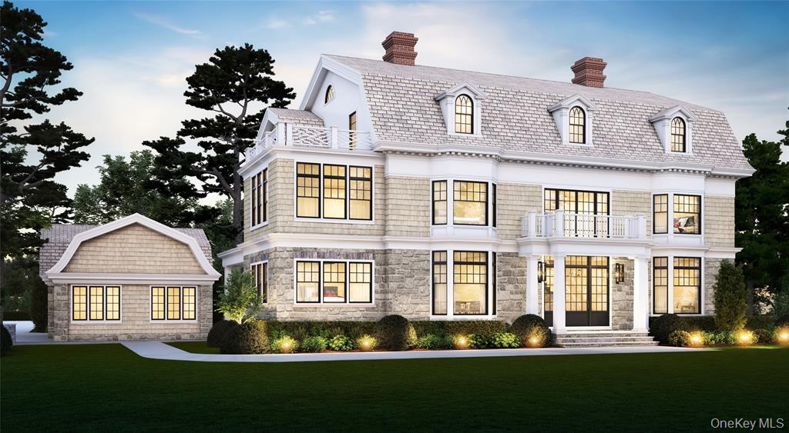

In Progress · Expected 2026
40 Ocean Ave
Larchmont Manor, New York
Size
9,500 sq ft
Lot
0.85 Acres
Bedrooms / Baths
7 BD · 8 BA · 1 Powder
Style
Dutch Colonial
Amenities
Elevator · Theater · Gym
Garage
3-Car + Covered Breezeway
The flagship Larchmont Manor project — an ultra-luxury Dutch Colonial steps from Manor Park and the Larchmont Yacht Club. Four fully designed levels with elevator service throughout, including a gym, theater, and media room. Cedar shingle and stone exterior, premium high-performance windows, and professionally landscaped grounds on nearly an acre.